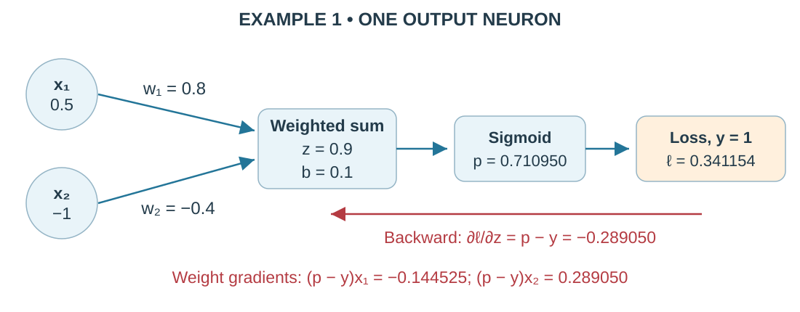
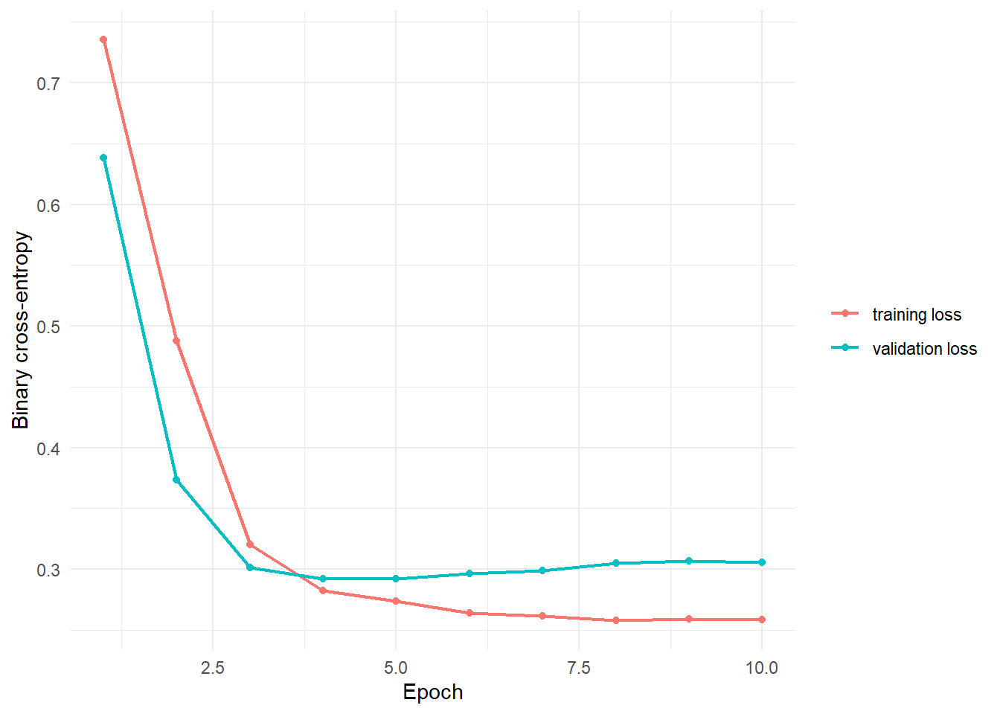

3.2 Multilayer Perceptrons
From logistic regression to a network that learns
1 Learning objectives
After this tutorial, you should be able to:
- compute the output of one neuron and a small MLP;
- explain why nonlinear activation functions matter;
- derive the logistic cross-entropy gradient;
- calculate backpropagation through hidden layers and take one gradient-descent step; and
- define and train a small MLP with R
torch.
2 From logistic regression to a neuron
Tutorial 3.1 used logistic regression to predict whether a shot becomes a goal. A neuron starts with the same calculation: multiply each input by its weight , add the products, then add a bias :
The bold notation groups the inputs and weights into lists called vectors. An activation function transforms . Logistic regression uses sigmoid, , to turn this logit into a probability between 0 and 1.
2.1 Visual anatomy of one neuron
Training adjusts the weights and bias. The diagram’s constant input 1 contributes .
A multilayer perceptron (MLP) adds intermediate groups of neurons called hidden layers. Their outputs become the next layer’s inputs. Our hidden neurons use ReLU, which keeps positive values and replaces negative values with zero:
Without this nonlinear step, stacking layers would still produce just one weighted sum before sigmoid. ReLU lets the network learn more complex relationships.
NoteRead the two-hidden-layer notation
Each is a table of weights; holds biases. The superscript identifies the layer, holds weighted sums, and holds activated outputs. Read from top to bottom:
3 A numerical forward pass
A forward pass calculates a prediction from the current weights. Use two inputs, and , and two hidden neurons. The inputs are standardized: zero represents a training-set mean, and negative values are below that mean.
Predict before running: find each weighted sum, called a pre-activation, then apply ReLU. These hand-chosen weights illustrate arithmetic, rather than fitted soccer effects. Each row of belongs to one hidden neuron.
x <- c(0.5, -1.0)
W <- matrix(
c(0.8, -0.4,
0.2, 0.6),
nrow = 2,
byrow = TRUE
)
b_hidden <- c(0.1, -0.2)
z_hidden <- as.numeric(W %*% x + b_hidden)
h <- pmax(0, z_hidden)
output_weights <- c(1.1, -0.7)
output_bias <- -0.2
logit <- sum(output_weights * h) + output_bias
probability <- 1 / (1 + exp(-logit))
data.frame(
quantity = c("z1", "z2", "h1", "h2", "logit", "probability"),
value = c(z_hidden, h, logit, probability)
) %>%
knitr::kable(digits = 3)| quantity | value |
|---|---|
| z1 | 0.900 |
| z2 | -0.700 |
| h1 | 0.900 |
| h2 | 0.000 |
| logit | 0.790 |
| probability | 0.688 |
The weighted sums are ; ReLU gives . The output neuron combines these new features: . Sigmoid gives . The second hidden neuron outputs zero here, but may be active for another shot.
4 Binary cross-entropy
A loss measures prediction error; smaller is better. Binary cross-entropy compares goal probability with outcome , where 1 means goal and 0 means no goal:
If , predicting gives a small loss of . Predicting gives a much larger loss of . Confident errors receive a strong penalty.
In R, nnf_binary_cross_entropy_with_logits() takes logits and observed outcomes, combining sigmoid and loss in one calculation. Give it matching shapes: one logit per outcome. Apply sigmoid separately to report probabilities.
WarningA common loss-function mistake
Do not apply sigmoid twice. For logit 2, sigmoid gives probability .881. Passing .881 into the logits-based loss applies sigmoid again, producing .707 internally and changing the calculation.
5 The key gradient
A gradient tells how loss changes with a small parameter change. Read as “the loss’s slope with respect to weight .” Gradient descent subtracts a small multiple of that slope to reduce loss.
Backpropagation finds these slopes backward from the loss. The chain rule multiplies slopes along a sequence of calculations; when paths meet, add their contributions. The three examples use one observation and no extra penalty on weights. Keep unrounded values while calculating.
5.1 Example 1: Trace the loss backward through one neuron
Use , , , , , and target . This first example has no hidden layer.

Forward pass.
Backward pass: loss to probability, then probability to logit. Because , the loss is :
Multiplying the two slopes gives . The same shortcut works for or :
Continue backward from the logit to each parameter. Since , the local derivatives are , , and :
Thus . Notice the opposite signs of the two weight gradients: gradient descent increases and decreases . Both changes raise the logit for this observation because is negative.
5.3 Example 3: Add contributions from two backward paths
One hidden unit can feed several later units. Its gradient must include every path to the loss. Consider this separate network with and :

All three ReLUs are active, so their local derivatives are 1. Start with . Now follow the two routes from the loss back to :
Add the paths before continuing to the earlier weight:
Using only would miss part of ’s effect. Backpropagation adds both contributions automatically.
TipThe hand-calculation routine
- Run the forward pass and save each pre-activation and activation.
- Start at the output loss with .
- Move backward, multiplying by local derivatives and adding contributions wherever paths meet.
- Calculate each parameter gradient, then let the optimizer update the parameters.
For a mini-batch, a small group of observations, average their loss gradients before updating. The examples above each use one observation.
6 Automatic differentiation in R torch
R torch stores numbers in tensors: vectors, matrices, or arrays with more dimensions. torch_tensor() converts an R object; dtype = torch_float() uses 32-bit floating-point numbers for our layers.
# Two shots (rows), each with two features (columns).
features <- matrix(c(0.5, -1, 0.2, 0.8), nrow = 2, byrow = TRUE)
x_batch <- torch_tensor(features, dtype = torch_float())
x_batch$size() # Tensor dimensions: 2 x 2[1] 2 2as_array(x_batch) # Convert back to an ordinary R array for inspection [,1] [,2]
[1,] 0.5 -1.0
[2,] 0.2 0.8The next code checks Example 1. requires_grad = TRUE tracks operations for weights and bias. Inputs and targets need no gradients here. Predict the three parameter gradients before running.
x_tensor <- torch_tensor(c(0.5, -1.0)) # Fixed input values
w_tensor <- torch_tensor(
c(0.8, -0.4),
requires_grad = TRUE
)
b_tensor <- torch_tensor(0.1, requires_grad = TRUE)
y_tensor <- torch_tensor(1)
z_tensor <- (w_tensor * x_tensor)$sum() + b_tensor
loss <- nnf_binary_cross_entropy_with_logits(
z_tensor,
y_tensor
)
loss$backward() # Record the loss gradient in each parameter's $grad
data.frame(
parameter = c("w1", "w2", "b"),
gradient = c(
as.numeric(w_tensor$grad[1]),
as.numeric(w_tensor$grad[2]),
as.numeric(b_tensor$grad)
)
) %>%
knitr::kable(digits = 4)| parameter | gradient |
|---|---|
| w1 | -0.1445 |
| w2 | 0.2891 |
| b | -0.2891 |
R torch records the forward calculations and their connections. Calling $backward() follows those connections in reverse using the chain rule; $grad stores the resulting gradients.
Compare with Example 1: , , weight gradients , and bias gradient .
For hidden layers, R also includes the connecting weights and activation slopes, just as in Examples 2–3. $backward() calculates gradients; it does not update weights. An optimizer performs the update.
7 Define the shot MLP
Return to the soccer data from Tutorial 3.1. Our network takes 10 features, passes them through hidden layers of 12 and 6 neurons, and returns one logit:
For shots, means 12 values per shot. The shapes follow . A dense layer connects every input to every output, with one bias per output. Count 217 parameters:
nn_module() defines a model constructor. initialize() creates its layers once; forward() describes what happens each time we call model(x). self refers to this model and stores its layers. Their weights automatically become trainable parameters.
NoteDefine and inspect the model in R
nn_linear(10, 12) makes 12 neurons reading 10 inputs; nn_relu() applies ReLU; nn_sequential() runs the layers in order.
mlp_module <- nn_module(
# Build and store layers when a new model is created.
initialize = function(number_of_features = 10L) {
self$network <- nn_sequential(
nn_linear(number_of_features, 12), nn_relu(),
nn_linear(12, 6), nn_relu(),
nn_linear(6, 1) # One logit; the loss handles sigmoid
)
},
forward = function(x) self$network(x) # Run the stored layers in order
)mlp <- mlp_module(number_of_features = 10)
mlpAn `nn_module` containing 217 parameters.
-- Modules ---------------------------------------------------------------------
* network: <nn_sequential> #217 parameterscount_parameters(mlp)[1] 2177.1 Visualize the fully connected layers

Every line represents a weight: this is fully connected. Biases are omitted from the drawing.
The final layer returns one logit per shot. We do not add a sigmoid layer because the training loss accepts logits.
8 Train the network
fit_binary_model() is our course helper in torch_helpers.R, not a built-in torch function. It repeats prediction, loss calculation, backpropagation, and updates. Each mini-batch has up to 64 shots; an epoch visits all training shots. patience = 5 stops after five epochs without a qualifying validation improvement. Tutorial 3.3 explains these settings.
torch_manual_seed(431)
mlp_fit <- fit_binary_model(
model = mlp_module(number_of_features = 10),
x = tensors$tabular, # N x 10 standardized inputs
y = tensors$target, # N x 1 observed outcomes
training_indices = tensors$train,
validation_indices = tensors$validation,
epochs = 30,
batch_size = 64,
learning_rate = 0.01,
patience = 5,
seed = 431
)
data.frame(
best_epoch = mlp_fit$best_epoch,
elapsed_seconds = mlp_fit$elapsed_seconds,
parameters = count_parameters(mlp_fit$model)
) %>%
knitr::kable(digits = 2)| best_epoch | elapsed_seconds | parameters |
|---|---|---|
| 5 | 0.78 | 217 |

mlp_fit is a list: $model holds the best saved network, $history holds epoch losses, and $best_epoch identifies the chosen checkpoint.
Lower loss is better. Training loss averages batches while weights change; validation loss is measured afterward with fixed weights. Their gap helps diagnose learning, but the curves use different conditions. Early stopping restores the best saved validation weights.
9 Check validation probabilities
Validation shots help choose settings; they do not update weights. The helper converts logits into probabilities and compares them with observed outcomes:
mlp_probability <- predict_probability(
mlp_fit$model,
tensors$tabular,
tensors$validation
)
evaluate_probabilities(
shots$target[tensors$validation],
mlp_probability
) %>%
select(log_loss, brier) %>%
knitr::kable(digits = 3)| log_loss | brier |
|---|---|
| 0.292 | 0.089 |
Repeated tuning can make validation scores look overly optimistic. Tutorial 3.6 uses separate test matches for final evaluation. A small network suits our 953 training shots, but size alone cannot show that it predicts new shots well.
10 Practice
- If every ReLU simply passed its input through unchanged, why would extra hidden layers add no new types of relationships?
- A positive observation has . What is ?
- Why does the model return logits during training?
- What does
$backward()compute? - Reuse Example 2’s original forward pass, but change the target to . Calculate , , , and . Then update with .
- In Example 3, suppose the bias of unit B changes from to . Recalculate the forward pass and . Which backward path is blocked?
TipShow answers
- Weighted sums of weighted sums combine into one weighted sum plus a bias. Nonlinear activations are what let hidden layers learn more complex relationships.
- .
- The combined logits loss is more numerically stable than applying a sigmoid and then taking logarithms separately.
- It works backward through the recorded calculations to find each parameter’s loss gradient. The optimizer then uses these gradients to change the weights.
- . Then , , and . The update gives . Its direction reverses compared with .
- Now , so . The other hidden values remain and . Therefore , , and . The route through unit B contributes zero because its ReLU is inactive. Only route A remains: . Recompute the output derivative after changing the forward pass; do not reuse the old .
11 Key takeaways
- Hidden neurons learn new combinations of the original inputs.
- ReLU adds nonlinear relationships; binary cross-entropy measures prediction error.
- Backpropagation computes gradients; the optimizer uses them to update parameters.
- Validation guides model choices; separate test data checks predictions on new matches.